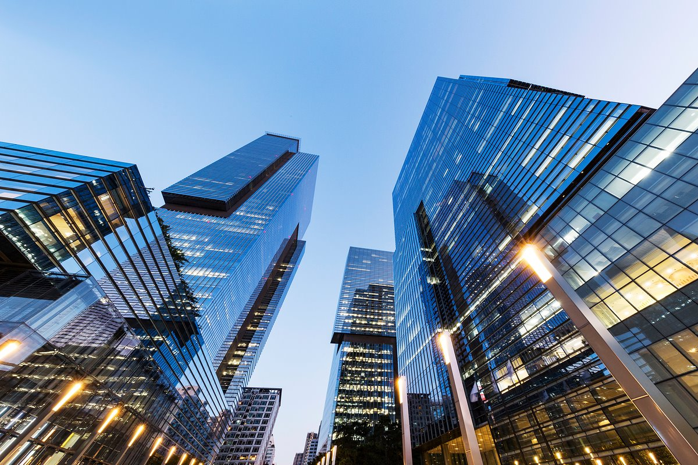

Discover the principles behind our vision of the future.

본사: 경기도 수원시 영통구 삼성로 129 (매탄동)
서초사옥: 서울특별시 서초구 서초대로74길 11 (서초동)
삼성전자 주식회사(영어: Samsung Electronics Co., Ltd., 三星電子株式會社)는 전자 제품을 생산하며 정보통신기술(ICT) 에대한 개발을 진행하고있는 대한민국의 기업이다. 삼성전자는 삼성그룹 안에서도 가장 규모가 큰, 삼성그룹을 대표하는 기업이기도 하다. 본사는 경기도 수원시 영통구 삼성로 129 (매탄동)에 있다 2017년 2분기, 영업이익 14조 원을 달성함으로써, 삼성전자는 2017년 2분기 지난 8년간 글로벌 영업이익 1위를 지켜온 미국 애플을 제치고 세계에서 가장 돈을 많이 번 제조 기업이다. 같은 기간, 세계 최대 유통 업체 미국 월마트나 세계 최고 자동차 기업 일본 토요타의 영업이익은 삼성전자의 절반에도 미치지 못한다. 삼성전자는 수퍼 호황을 맞고 있는 반도체 부문에서 매출 18조 원, 영업이익 8조 원을 올리며 지난 24년간 세계 반도체 1위를 지켜온 미국 인텔을 매출액과 영업이익 모두에서 앞질렀다. 스마트폰 부문은 2016년 하반기 갤럭시 노트7 발화 쇼크를 극복하며 3조 원 후반대의 영업이익을 낸 것으로 추정된다. 미국 경제전문지 포춘(Fortune)이 선정하는 글로벌 500대 기업에서 역대 최고 순위인 12위에 올랐다. 포춘은 매년 매출액 기준으로 글로벌 상위 500대 기업을 발표하고 있는데, 삼성전자의 2017년 매출액은 연결재무제표 기준으로 239조 5800억 원이다.